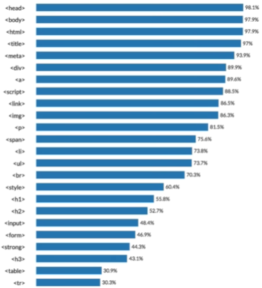

HTML 첫 코딩
- 1. HTML
- 2. CSS
- 3. JavaScript
- * li 태그 집합에 대한 부모 태그는 ul로, 해당 li 태그들이 하나의 그룹임을 표시해주는 태그임
- HTML
- CSS
- JavaScript
- 리스트 집합의 순서를 부여하고 싶으면 부모태그인 ol로 묶어주면 됨
0) html 각주 다는 방법 => ctrl + /
1)
지난 학기까지 심리대학원을 생각하고 있어서 인공지능 관련 공부에 대해서 깊게 생각을 안 했었음. 근데 지난 학기 끝나면서 계속 생각을 했던 게 내가 대학원을 가려고 하는 이유에 취업 준비를 피하려고 하는 게 있는 것 같아서 취업을 목적으로 바꾸게 됨
2)
취업에 대해 고민을 하면서 느낀 게 지금 남들 다 하는 프로젝트 경험도 없고 AI 알고리즘에 대한 지식이 너무 부족한 거 같음. 이걸 크게 느끼게 된 게 지금 AI캡디 수업을 듣는데 내가 알아듣는 게 거의 없음. 이해를 못 하는 건 다른 수업에서도 마찬가지임. 지난 학기까지는 자료구조나 빅데이터 개론 정도로 프로젝트 진행하는 강의가 없어서 그냥 코드만 짤줄 알면 무난하게 할 수 있는 수준이었는데, 이번 학기에는 프로젝트를 진행하는 강의가 2개가 있어서 특히 더 이해를 못 하는 거 같음. 이 상태에서 강의를 듣고 어영부영 캡스톤 프로젝트 끝내면 남는 게 하나도 없을 거라고 확신이 들어서 더 늦기 전에 지금이라도 휴학하고 공부를 하는 게 맞다고 생각이 드는데 학기 중간에 휴학하는 게 고민이 됨.
3)
휴학 했을 때 계획하고 있는 건 “딥러닝을 위한 선형대수학” + “밑바닥부터 시작하는 머신러닝” 교재로 11월 전까지 공부하고, 깃헙에서 찾아둔 NLP 강의자료가 있어서 이걸 12월까지 공부하면서 저번에 알려준 fly ai나 우테코 쪽 부트캠프 지원할 예정. 부트캠프를 하려고 하는 목적은, 나 혼자 공부하고 프로젝트 해보는 것들이 맞는 방향인지도 확인해보고 공부한 것들을 정리하는 시간을 갖기 위함임. 부트캠프 찾는 중에 괜찮은 취업 연계형 인턴이나 부트캠프 있으면 그 쪽으로도 지원해볼 것임.
4)
이런 생각을 갖고 있고, 뚜렷한 목표랑 열정이 생겨서 열심히 해보고 싶은데 중도 휴학이라는 게 부모님께 선뜻 말하기 어려운 주제라 누나한테 먼저 물어봄.
5)
그래서 물어보고 싶은 건 2)에서 말한 것처럼 내 지식이 부족한 게 느껴지는데 휴학하고 공부를 하는 게 맞는 거 같은지를 먼저 취업하고 사회 경험을 하고 있는 입장에서 알려줬으면 좋겠음.
tag 라고 부르는 것(like <.strong> <.u> 등)
br 태그는 단순 줄바꿈이지만 닫힘을 할 필요가 없기 때문에 엔터를 많이 누르려면 br 태그를 여러번 작성하면 됨
p 태그는 단락 이라는 맥락정보를 제공하나,html만 사용할 때는 단락 간 간격이 정해져 있어 엔터를 여러 번 할 수 는 없음
css를 통해 p 태그도 단락 간격을 넓힐 수 있음

<.img width = "n%" src = "~.jpg"> 라고 할 때 img 외의 부분은 attribute 라고 하며 해당 태그의 여러 의미를 부여해주는 것임
또한 각 attribute의 위치는 바뀌어도 상관 없음